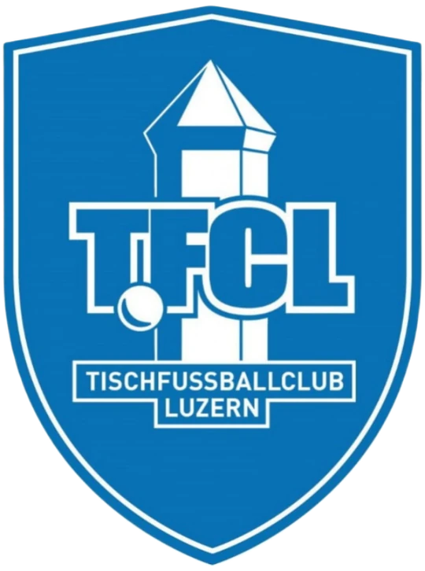

Hall of Fame TFC Luzern
Alle Podestplätze der Spieler, die heute eine Lizenz beim TFC Luzern haben. Such deinen Namen und sieh nach, was du geholt hast.

150Podestplätze holten die Spieler des TFC Luzern
Gezählt sind die Schweizermeisterschaft, die Nati, die Jahresranglisten, die Fordere-Liga Luzern und die Turniere je Person, dazu die Clubliga je Team. 20 Personen stehen auf dem Podest, von 37 Spielern mit Lizenz.
Dazu kommen 3 Teilnahmen an der Champions League. Sie stehen weiter unten und zählen in keine Summe.
Quelle: Schweizer Verband, Coral, tablesoccer.org, players4players.de und fordere.ch, abgerufen am 20. November 2026.
- Gold
- 54 Rang 1, Stand 20. November 2026
- Silber
- 36 Rang 2, Stand 20. November 2026
- Bronze
- 60 Rang 3, Stand 20. November 2026
Wer auf dem Podest stand
20 Personen stehen in der Rangliste, geordnet nach Podestplätzen, bei Gleichstand nach Gold. Die Clubliga zählt je Team und steht darum darunter. Ehrenmitglieder stehen oben und zählen in keine Summe.
- 1

Vasco Oliveira
Ehrenmitglied, zählt in keine SummeIch bin Erster, weil ichs kann.
Gold 2Silber 1Bronze 25 Podestplätze ansehen
- 2026P4P, Swiss Open 2026, Neulinge EinzelGoldQuelle
- 2026Verbandsturnier, STRT Zürich - OD - 2026/01, Open DoublesGoldQuelle auf Coral
- 2025Verbandsturnier, STRT26 - TFC Zürich - OD - Herbst Tour, Open DoublesBronzeQuelle auf Coral
- 2025Verbandsturnier, STRT Zürich - OD - 2025/10 - Leonhart, Open DoublesBronzeQuelle auf Coral
- 2018/19Fordere-Liga Luzern, 1. Liga GarlandoSilberQuelle auf fordere.ch
5Podestplätze - 2
Jorge Rodriguez
Aktueller Weltmeister im Fussball.
Gold 11 Podestplatz ansehen
- 2018/19Fordere-Liga Luzern, 1. Liga GarlandoGoldQuelle auf fordere.ch
1Podestplatz - 3
Hannes Wallimann
Schweizer Meister Herren Doppel, 7×
Gold 13Silber 8Bronze 1031 Podestplätze ansehen
- 2026Verbandsturnier, STRT - TFC Zürich - OD - 2026/06, Open DoublesGoldQuelle auf Coral
- 2026Verbandsturnier, STS26 - Luzern - Jahreseröffnungsturnier, Open DoublesGoldQuelle auf Coral
- 2026Verbandsturnier, STS26 - Zürich - ITSF 250, Open DoublesBronzeQuelle auf Coral
- 2025Verbandsturnier, STS Teufenthal - 2025/06 - ITSF 500 WT 2025, Open DoublesGoldQuelle auf Coral
- 2025Verbandsturnier, STS Luzern (Rothenburg) - 2025/02, Open SinglesGoldQuelle auf Coral
- 2025Schweizermeisterschaft, Herren DoppelSilberQuelle beim Verband
- 2024Schweizermeisterschaft, Herren DoppelGoldQuelle beim Verband
- 2024Verbandsturnier, STRT Bern, Open DoublesGoldQuelle auf Coral
- 2024Nati Herren, World Series GarlandoBronzeQuelle auf Coral
- 2024Jahresrangliste, Open DoppelBronzeQuelle
- 2023Schweizermeisterschaft, Herren EinzelBronzeQuelle beim Verband
- 2022Schweizermeisterschaft, Herren DoppelGoldQuelle beim Verband
- 2022Schweizermeisterschaft, Herren EinzelBronzeQuelle beim Verband
- 2021Schweizermeisterschaft, Herren DoppelGoldQuelle beim Verband
- 2019Schweizermeisterschaft, Herren DoppelGoldQuelle beim Verband
- 2019Schweizermeisterschaft, Herren EinzelSilberQuelle beim Verband
- 2018Schweizermeisterschaft, Herren DoppelGoldQuelle beim Verband
- 2017Schweizermeisterschaft, Herren DoppelGoldQuelle beim Verband
- 2017Schweizermeisterschaft, Herren EinzelSilberQuelle beim Verband
- 2016Schweizermeisterschaft, Herren Doppel (Event 2)GoldQuelle beim Verband
- 2016Schweizermeisterschaft, Mixed (Event 1)GoldQuelle beim Verband
- 2016Schweizermeisterschaft, Herren Einzel (Event 2)BronzeQuelle beim Verband
- 2016Schweizermeisterschaft, Mixed (Event 2)BronzeQuelle beim Verband
- 2014Schweizermeisterschaft, Herren DoppelSilberQuelle beim Verband
- 2014P4P, Swiss Open 2014, Pro-AmBronzeQuelle
- 2014P4P, Maritim Open 2014, Amateur DoppelBronzeQuelle
- 2013Schweizermeisterschaft, Herren Doppel, mit Marc BurriSilberQuelle beim Verband
- 2013Schweizermeisterschaft, MixedSilberQuelle beim Verband
- 2013P4P, Swiss Open 2013, Neulinge EinzelSilberQuelle
- 2013P4P, Deutsche Meisterschaft 2013, Amateur DoppelBronzeQuelle
- 2011P4P, Swiss Open 2011, Neulinge DoppelSilberQuelle
31Podestplätze - 4
Rayan Van Stokkum
Schweizer Meister Junioren Einzel, 3×
Gold 11Silber 8Bronze 726 Podestplätze ansehen
- 2026Jahresrangliste, Junior EinzelGoldQuelle auf tablesoccer.org
- 2026World Series, World Series Bonzini 2026, Junior MixedGoldQuelle auf Coral
- 2026Verbandsturnier, STS26 - Luzern - Jahreseröffnungsturnier, Junior Under 19 SinglesGoldQuelle auf Coral
- 2026World Series, World Series Leonhart 2026, Junior Under 19 ClassicSilberQuelle auf Coral
- 2026World Series, World Series Bonzini 2026, Junior U19 DoublesSilberQuelle auf Coral
- 2026Verbandsturnier, STRT - TFC Zürich - OE - 2026/10, Open SinglesBronzeQuelle auf Coral
- 2026Verbandsturnier, STRT Zürich - OE - 2026/02, Open SinglesBronzeQuelle auf Coral
- 2026Verbandsturnier, STS26 - Luzern - Jahreseröffnungsturnier, Open SinglesBronzeQuelle auf Coral
- 2025Jahresrangliste, Junior EinzelGoldQuelle auf tablesoccer.org
- 2025World Series, World Series Leonhart 2025, Junior U19 DoublesGoldQuelle auf Coral
- 2025Verbandsturnier, STS Zürich (Urdorf) - 2025/03, Junior Under 19 SinglesGoldQuelle auf Coral
- 2025World Series, World Series Leonhart 2025, Junior U19 SinglesSilberQuelle auf Coral
- 2025Verbandsturnier, STS Zürich (Urdorf) - 2025/03, Junior Under 19 DoublesSilberQuelle auf Coral
- 2025Jahresrangliste, Junior DoppelBronzeQuelle auf tablesoccer.org
- 2025World Series, World Series Bonzini 2025, Junior U19 DoublesBronzeQuelle auf Coral
- 2024Schweizermeisterschaft, Junioren DoppelGoldQuelle beim Verband
- 2024Schweizermeisterschaft, Junioren EinzelGoldQuelle beim Verband
- 2024Nati Junioren, World Series LeonhartSilberQuelle auf Coral
- 2024World Series, World Series Garlando 2024, Junior U19 ClassicSilberQuelle auf Coral
- 2024World Series, World Series Garlando 2024, Junior U19 DoublesBronzeQuelle auf Coral
- 2023Schweizermeisterschaft, Junioren EinzelGoldQuelle beim Verband
- 2023Schweizermeisterschaft, Junioren DoppelSilberQuelle beim Verband
- 2022Schweizermeisterschaft, Junioren EinzelGoldQuelle beim Verband
- 2022Schweizermeisterschaft, Junioren DoppelSilberQuelle beim Verband
- 2021Schweizermeisterschaft, Junioren DoppelGoldQuelle beim Verband
- 2019Schweizermeisterschaft, Junioren DoppelBronzeQuelle beim Verband
26Podestplätze - 5
Peter Felder
Weltmeister Men Classic 2025
Gold 7Silber 6Bronze 720 Podestplätze ansehen
- 2026Verbandsturnier, STS26 - Zürich - ITSF 250, Open MixedSilberQuelle auf Coral
- 2025ITSF, World Cup 2025, Men Classic, Weltmeister in Zaragoza, SpanienGoldQuelle auf Coral
- 2025Verbandsturnier, STS Teufenthal - 2025/06 - ITSF 500 WT 2025, Open DoublesSilberQuelle auf Coral
- 2025Verbandsturnier, STS Luzern (Rothenburg) - 2025/02, Open SinglesSilberQuelle auf Coral
- 2025Nati Herren, World CupBronzeQuelle auf Coral
- 2025Verbandsturnier, STS St. Gallen - 2025/04 - ITSF 500 WT 2025, Open DoublesBronzeQuelle auf Coral
- 2025Verbandsturnier, STS Luzern (Rothenburg) - 2025/02, Open DoublesBronzeQuelle auf Coral
- 2024Nati Herren, World Series GarlandoBronzeQuelle auf Coral
- 2022/23Fordere-Liga Luzern, 1. Liga GarlandoSilberQuelle auf fordere.ch
- 2021/22Fordere-Liga Luzern, 1. Liga GarlandoGoldQuelle auf fordere.ch
- 2022Schweizermeisterschaft, Herren EinzelGoldQuelle beim Verband
- 2022Schweizermeisterschaft, MixedGoldQuelle beim Verband
- 2022P4P, Swiss Open 2022, Offenes EinzelSilberQuelle
- 2022Schweizermeisterschaft, Herren Doppel, mit Adrian SchulerBronzeQuelle beim Verband
- 2019/20Fordere-Liga Luzern, 1. Liga GarlandoGoldQuelle auf fordere.ch
- 2016P4P, Swiss Open 2016, Amateur EinzelGoldQuelle
- 2015Schweizermeisterschaft, Herren Doppel, mit Adrian SchulerBronzeQuelle beim Verband
- 2014P4P, Swiss Open 2014, Neulinge EinzelGoldQuelle
- 2014P4P, Swiss Open 2014, Neulinge DoppelSilberQuelle
- 2014P4P, Maritim Open 2014, D.Y.P.BronzeQuelle
20Podestplätze - 6
Arpad Wicki
Turniersieg Amateur Doppel, 2×
Gold 4Silber 2Bronze 814 Podestplätze ansehen
- 2026P4P, P4P Championship 2026, Amateur EinzelGoldQuelle
- 2026Verbandsturnier, STRT Zürich - OD - 2026/02, Open DoublesBronzeQuelle auf Coral
- 2025Verbandsturnier, STRT Seetal - OD, MX - 2025/02, Open DoublesBronzeQuelle auf Coral
- 2025P4P, Münchberg Open 2025, Offenes DoppelBronzeQuelle
- 2024P4P, Allgäu Open 2024, Pro-AmSilberQuelle
- 2020P4P, Allgäu Open 2020, D.Y.P.GoldQuelle
- 2020P4P, Allgäu Open 2020, Elite DoppelBronzeQuelle
- 2017P4P, Hessische Meisterschaft 2017, Amateur DoppelGoldQuelle
- 2017P4P, Maritim Open 2017, Amateur DoppelBronzeQuelle
- 2015P4P, Südbadische Meisterschaft 2015, Amateur DoppelGoldQuelle
- 2015P4P, Südbadische Meisterschaft 2015, Amateur EinzelBronzeQuelle
- 2013P4P, Swiss Open 2013, Amateur EinzelBronzeQuelle
- 2011P4P, Swiss Open 2011, Neulinge DoppelSilberQuelle
- 2010Schweizermeisterschaft, Herren EinzelBronzeQuelle beim Verband
14Podestplätze - 7
Martin Felder
Nati-Bronze Herren, 2×
Gold 2Bronze 68 Podestplätze ansehen
- 2026Verbandsturnier, TFC Bern Pro Regio Turnier Open Air 2026, Open Air Offenes DoppelGoldQuelle auf Coral
- 2025Nati Herren, World CupBronzeQuelle auf Coral
- 2025Schweizermeisterschaft, Herren EinzelBronzeQuelle beim Verband
- 2025Verbandsturnier, STS Luzern (Rothenburg) - 2025/02, Open DoublesBronzeQuelle auf Coral
- 2025Verbandsturnier, STS Luzern (Rothenburg) - 2025/02, Open SinglesBronzeQuelle auf Coral
- 2024Nati Herren, World Series GarlandoBronzeQuelle auf Coral
- 2018Schweizermeisterschaft, Herren EinzelBronzeQuelle beim Verband
- 2017P4P, Swiss Open 2017, Neulinge DoppelGoldQuelle
8Podestplätze - 8
Reto Odermatt
Turniersieg Open Doubles
Gold 3Silber 1Bronze 37 Podestplätze ansehen
- 2026Verbandsturnier, STS26 - Val d'Iliez, Amateur DoppelGoldQuelle auf Coral
- 2026Verbandsturnier, STS26 - Val d'Iliez, Open SinglesBronzeQuelle auf Coral
- 2025Verbandsturnier, STRT Seetal - OD, OE, MX - 2025/03, Open SinglesBronzeQuelle auf Coral
- 2025Verbandsturnier, STS St. Gallen - 2025/04 - ITSF 500 WT 2025, Open SinglesBronzeQuelle auf Coral
- 2024Verbandsturnier, STRT Bern, Open DoublesGoldQuelle auf Coral
- 2022/23Fordere-Liga Luzern, 1. Liga GarlandoGoldQuelle auf fordere.ch
- 2021/22Fordere-Liga Luzern, 1. Liga GarlandoSilberQuelle auf fordere.ch
7Podestplätze - 9
Adrian Schuler
Turniersieg Neulinge Einzel
Gold 1Silber 1Bronze 24 Podestplätze ansehen
- 2022Schweizermeisterschaft, Herren Doppel, mit Peter FelderBronzeQuelle beim Verband
- 2016P4P, Swiss Open 2016, Neulinge EinzelGoldQuelle
- 2015Schweizermeisterschaft, Herren Doppel, mit Peter FelderBronzeQuelle beim Verband
- 2014P4P, Swiss Open 2014, Neulinge DoppelSilberQuelle
4Podestplätze - 10
Matteo Cosi
Jahresbester Neulinge Doppel
Gold 2Silber 13 Podestplätze ansehen
- 2026Verbandsturnier, STS26 - Val d'Iliez, Amateur DoppelGoldQuelle auf Coral
- 2019/20Fordere-Liga Luzern, 1. Liga GarlandoSilberQuelle auf fordere.ch
- 2019Jahresrangliste, Neulinge DoppelGoldQuelle
3Podestplätze - 11
Silvio Fischer
Fordere-Sieg
Gold 1Bronze 23 Podestplätze ansehen
- 2021/22Fordere-Liga Luzern, 1. Liga GarlandoBronzeQuelle auf fordere.ch
- 2019/20Fordere-Liga Luzern, 2. Liga GarlandoGoldQuelle auf fordere.ch
- 2018/19Fordere-Liga Luzern, 2. Liga GarlandoBronzeQuelle auf fordere.ch
3Podestplätze - 12
Daniel Flüeler
Nati-Bronze Senioren
Silber 2Bronze 13 Podestplätze ansehen
- 2026World Series, World Series Leonhart 2026, Senior Over 63 DoublesSilberQuelle auf Coral
- 2024World Series, World Series Garlando 2024, Senior O63 ClassicSilberQuelle auf Coral
- 2024Nati Senioren, World Series GarlandoBronzeQuelle auf Coral
3Podestplätze - 13
Pascal Felber
3. Rang an Turnieren Open Doubles
Bronze 33 Podestplätze ansehen
- 2026Verbandsturnier, STRT26 CFTJS - OD - 2026/02, Open DoublesBronzeQuelle auf Coral
- 2019/20Fordere-Liga Luzern, 1. Liga GarlandoBronzeQuelle auf fordere.ch
- 2018/19Fordere-Liga Luzern, 1. Liga GarlandoBronzeQuelle auf fordere.ch
3Podestplätze - 14
Michele Sabbatini
Fordere-Sieg
Gold 1Silber 12 Podestplätze ansehen
- 2021/22Fordere-Liga Luzern, 2. Liga GarlandoGoldQuelle auf fordere.ch
- 2018/19Fordere-Liga Luzern, 3. Liga GarlandoSilberQuelle auf fordere.ch
2Podestplätze - 15
Alain Baumann
Fordere-Sieg
Gold 1Bronze 12 Podestplätze ansehen
- 2022/23Fordere-Liga Luzern, 1. Liga GarlandoBronzeQuelle auf fordere.ch
- 2019/20Fordere-Liga Luzern, 2. Liga GarlandoGoldQuelle auf fordere.ch
2Podestplätze - 15
Luca Escribano
Jahresbester Neulinge Doppel
Gold 1Bronze 12 Podestplätze ansehen
- 2026Verbandsturnier, STS26 - Zürich - ITSF 250, Amateur EinzelBronzeQuelle auf Coral
- 2019Jahresrangliste, Neulinge DoppelGoldQuelle
2Podestplätze - 17
Marc Burri
2. Rang Schweizermeisterschaft Herren Doppel
Silber 1Bronze 12 Podestplätze ansehen
- 2013Schweizermeisterschaft, Herren Doppel, mit Hannes WallimannSilberQuelle beim Verband
- 2010P4P, Swiss Open 2010, Neulinge DoppelBronzeQuelle
2Podestplätze - 18
Manuel Ragonesi
3. Rang an Turnieren Open Doubles
Bronze 22 Podestplätze ansehen
- 2026Verbandsturnier, STRT26 CFTJS - OD - 2026/02, Open DoublesBronzeQuelle auf Coral
- 2025Verbandsturnier, STRT Seetal - OD, OE, MX - 2025/03, Open MixedBronzeQuelle auf Coral
2Podestplätze - 19
Jan Angara
2. Rang an Turnieren Rookie Doubles
Silber 11 Podestplatz ansehen
- 2025Verbandsturnier, STS Luzern (Rothenburg) - 2025/02, Rookie DoublesSilberQuelle auf Coral
1Podestplatz - 20
Tomas Karajan
3. Rang an Turnieren Open Doubles
Bronze 11 Podestplatz ansehen
- 2026Verbandsturnier, STRT Zürich - OD - 2026/02, Open DoublesBronzeQuelle auf Coral
1Podestplatz - 20
Vullnet Fazliu
3. Rang Fordere-Liga
Bronze 11 Podestplatz ansehen
- 2022/23Fordere-Liga Luzern, 1. Liga GarlandoBronzeQuelle auf fordere.ch
1Podestplatz
Clubliga, die Teams
Ein Podestplatz zählt je Team und steht darum nicht in der Rangliste der Personen.
- 2026Super League, TFC Luzern 1GoldQuelle beim Verband
- 2025Super League, TFC Luzern 1GoldQuelle beim Verband
- 2025Challenge League, TFCL 2BronzeQuelle beim Verband
- 2024Super League, TFC Luzern 1GoldQuelle beim Verband
- 2024Challenge League, TFC Luzern 2BronzeQuelle beim Verband
- 2023Super League, TFC Luzern 1SilberQuelle beim Verband
- 2023Women League, TFC Luzern DamenSilberQuelle beim Verband
- 2023Challenge League, TFC Luzern 2BronzeQuelle beim Verband
- 2019Super League, TFC Luzern 1SilberQuelle beim Verband
- 2019Women League, TFC Luzern DamenSilberQuelle beim Verband
- 2019Challenge League, TFC Luzern 2BronzeQuelle beim Verband
- 2018Super League, TFC Luzern 1GoldQuelle beim Verband
- 2018Women League, TFC Luzern woman 1GoldQuelle beim Verband
- 2017Super League, TFC LuzernGoldQuelle beim Verband
Champions League: Dabei sein ist alles
Der TFC Luzern tritt an, wenn Clubs aus ganz Europa um die Krone spielen. 3 Teilnahmen sind belegt. Ein Pokal fehlt noch im Regal. Die Reisen nach Messina, Genova und Roma nimmt uns trotzdem keiner mehr. Darum zählt hier das Dabeisein, und es steht in keiner Summe der Podestplätze.
3Teilnahmen
- 2026ITSF World Champions League Finals 2026, Men Team, Messina, Italien. Rang 10 von 29 Teams. Im Kader standen Fabio Di Crescenzo, Hannes Wallimann, Manuel Ragonesi, Martin Felder, Pascal Felber, Peter Felder, Reto Odermatt.Quelle auf Coral
- 2024European Champions League 2024, Men, Genova, Italien. Rang 14 von 24 Teams. Im Kader standen Fabio Di Crescenzo, Hannes Wallimann, Manuel Ragonesi, Martin Felder, Pascal Felber, Tomas Karajan, Vullnet Fazliu.Quelle auf Coral
- 2023European Champions League 2023, Men, Roma, Italien. Rang 5 von 23 Teams. Im Kader standen Hannes Wallimann, Manuel Ragonesi, Peter Felder, Reto Odermatt, Tomas Karajan, Vullnet Fazliu.Quelle auf Coral
Wollt ihr auch so eine coole Seite?
Sprecht mit mir. Ich baue Seiten wie diese für Clubs, Vereine und Verbände.
Du willst nicht auf dieser Seite stehen? Schreib an dieselbe Adresse, dann fliegt dein Name raus.
Wer die wahren Champions sehen will, geht hier entlang.
Mehr Podestplätze als hier gibt es beim Tischfussball Club Zürich. Schau selbst.